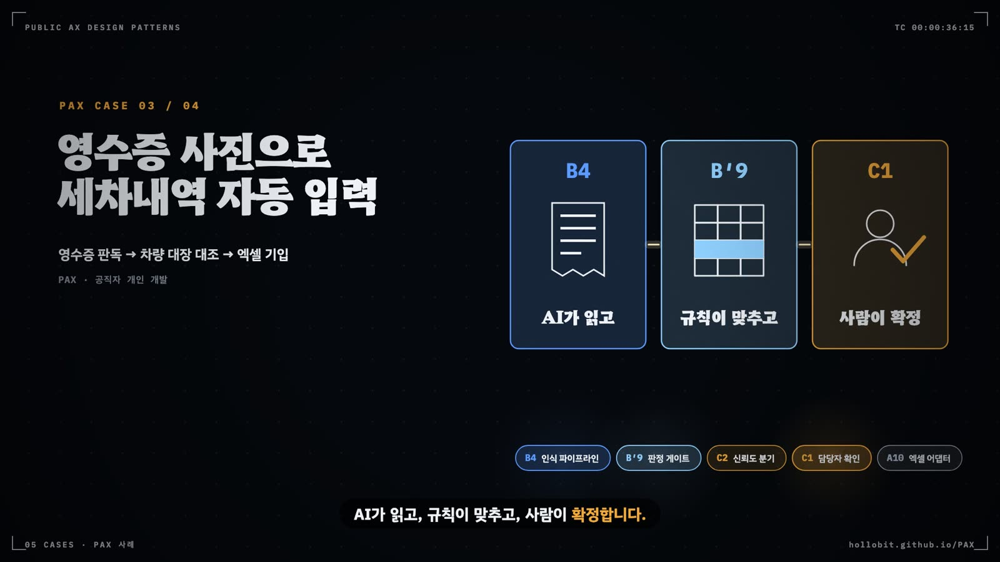

제어 흐름 원형은 B 부품 안의 배선을 적는 이름이다. 단일 에이전트에서 시작해 필요가 확인될 때만 배선을 늘린다.
이 장에서 얻을 것
B′1~B′10과 B′+ 열한 원형을 배선의 목적별로 묶어 읽는다
원형 선택 규칙으로 뼈대 배선과 덧붙일 배선을 고른다
B′5와 B′9, B′7과 B′8처럼 헷갈리는 짝을 가른다
B′ 원형과 C·S 계층 부품의 관계를 설명한다
같은 상담 기록을 두 번 넣었더니 결론이 달라졌다. 시연 자리에서는 그럴듯하게 돌던 검토 도구에서 생긴 일이다. 요약 에이전트가 기록을 정리하면 판정 에이전트가 지원 대상인지 의견을 내고, 검토 에이전트가 그 의견을 반박했다. 세 에이전트는 의견이 모일 때까지 대화를 이어 갔고, 어떤 날은 열두 번을 주고받은 끝에야 멈췄다. 무엇이 문제냐고 묻자 도구를 만든 주무관은 에이전트 수가 모자란 것 같다고 답했다.
고칠 곳은 배선이었다. 판정 기준은 이미 지침에 숫자로 적혀 있었다. 모델이 할 일은 기록에서 항목을 뽑는 데까지였고, 판정은 규칙이, 확정은 담당자가 하면 됐다. B′ 제어 흐름 원형(Control-flow Primitives)은 이런 배선에 이름을 붙이는 어휘다.
부품 안의 배선을 적는 어휘
B′가 다루는 곳은 B 부품의 안쪽이다. B 업무 컴포넌트가 사람과 AI의 몫을 정한다면, B′는 그 부품 안에서 단계가 어떤 순서와 모양으로 이어지는지를 적는다. 그래서 한 과제에 B 주 부품은 하나지만 B′는 여러 개가 함께 붙는다. 카탈로그는 Google ADK의 8패턴, Gulli의 21패턴, Towards AI의 7패턴, Yip 등의 5패턴에서 겹치는 것만 골라 원형으로 채택했다. 여기에 공공 사례를 태깅하면서 나온 두 원형이 더해졌다. 판정 모델의 출력을 규칙이 확정하는 B′9결정론 판정 게이트(v0.6)와 그 역방향인 B′10선게이트·후보축소(v0.7, R11)다.
Gulli(2025)의 앞 일곱 장은 이 원형들과 거의 그대로 겹친다. 1장 프롬프트 체이닝이 B′1, 2장 라우팅이 B′2, 3장 병렬화가 B′3이고, 4장 반성은 B′5와 B′6으로 갈렸다. 5장 도구 사용은 B′7, 6장 계획은 B′8, 7장 다중 에이전트 협업은 배선으로 읽으면 B′4에 대응하며(같은 장을 업무 분담으로 읽으면 B6의 원형이다, 5장), 8장 기억 관리는 B′+가 되었다. B′9와 B′10에 해당하는 장은 없다. 규칙을 모델의 뒤나 앞에 세우는 이 두 배선은 공공 사례를 태깅하면서 이름을 얻었다.
그림 6.1에서 열한 원형은 배선의 목적에 따라 두 줄로 놓인다. 위 줄은 순서를 고정하고, 경로를 가르고, 일을 나누고, 도구를 탐색하는 배선이다. 결과를 검증하거나 판정을 규칙에 넘기거나 맥락을 잇는 배선은 아래 줄에 있다.
그림 6.1 B′ 원형 지도. 위 줄은 단계를 잇는 방식, 아래 줄은 결과를 다루는 방식이다. B′7에서 B′4로 가는 화살표는 단일 에이전트에서 계층으로 승급하는 경로이고, 점선은 B′9가 B′10과는 방향이, B′5와는 실패 처리 방식이 다르다는 표시다.
단일에서 시작해 필요할 때 늘린다
원형을 고르는 순서는 카탈로그의 원형 선택 규칙이 정한다. 단일 에이전트의 B′1순차 파이프라인이나 B′7ReAct 도구 루프에서 시작한다. 하위 작업이 진짜로 분리되거나, 병렬이 지연을 의미 있게 줄이거나, 컨텍스트 창이 부족할 때만 B′3병렬 팬아웃·수집이나 B′4계층 분해·감독자로 올린다. 이 순서를 건너뛴 결과가 안티패턴 X11처음부터 멀티에이전트다. 조정 비용만 늘고, 단일 에이전트로 되돌리면 더 잘 도는 경우가 많다. Gulli(2025) 6장도 같은 조언을 한다. 방법을 미리 알 수 없을 때만 동적 계획을 쓰고, 이미 아는 반복 절차는 고정된 흐름으로 두어야 결과를 예측하기 쉽다.
그림 6.2의 앞 두 단계는 뼈대 배선 하나를 고른 뒤 필요한 배선을 덧붙이는 일이다. 순서가 고정된 업무는 B′1, 중간 이탈이 비싼 긴 정형 업무는 B′8계획-실행, 관찰마다 방향이 바뀌는 탐색적 업무는 B′7이 뼈대다. 덧붙이는 배선은 실제로 관측된 문제가 있을 때만 단다.
그림 6.2 원형을 고르는 세 단계. 뼈대 배선 하나를 고르고, 관측된 문제에 맞는 배선만 덧붙이며, 분리·병렬·컨텍스트 조건 가운데 하나가 확인될 때만 계층·병렬로 승급한다.
덧붙이는 배선 가운데 루프를 만드는 두 원형에는 반드시 상한이 따라와야 한다. B′5생성자-비평가는 반복 상한 2~3회를, B′6반복 개선은 최대 반복을 둔다. 상한이 없으면 품질은 그대로인데 토큰만 태우는 X12상한 없는 반영 루프가 된다. 원형 선택 규칙은 체크포인트의 자리도 정한다. 되돌리는 데 사람 시간이 많이 드는 조치에는 반드시 체크포인트(C1검토 큐·C8권한 경계·킬스위치)를 두고, 쉽게 되돌릴 수 있는 조치는 흘려보낸다. 어디서 멈추고 어디서 흘려보낼지 문서에 적어 두지 않은 곳에서 사고가 난다.
헷갈리는 짝
원형 이름은 서로 닮았다. 태깅 피드백에서 판단이 가장 자주 엇갈린 네 짝을 그림 6.3에 모았다. 짝마다 가르는 기준은 한 문장이다.

화면 6.1PAX 사례 '영수증 사진으로 세차내역 자동 입력'의 배선. AI가 읽고(B4), 규칙이 맞추고(B′9), 사람이 확정한다(C1). 쇼릴 「공공 AX 디자인 패턴」(2026년 9월 제작)의 한 장면. 화면 속 수치는 제작 당시 기준이다.그림 6.3 자주 헷갈리는 네 짝. 왼쪽 위 짝은 실패를 다루는 방식이, 오른쪽 위 짝은 계획 시점이, 왼쪽 아래 짝은 분기의 목적이, 오른쪽 아래 짝은 병렬의 동기(지연인가 보안인가)가 다르다.
B′5와 B′9의 구분은 실무에서 가장 자주 쓰인다. 생성자-비평가는 검증에 실패한 결과를 다시 쓰고, 결정론 판정 게이트는 기각하거나 강등할 뿐 다시 쓰지 않는다. 게이트에서 모델은 추출값·근거 문장·신뢰도 같은 정형 출력만 내고, 판정·산수·분기는 규칙 엔진이 하며, 사람이 확정한다. 서버가 근거 문장을 원문과 다시 대조해 문서 확인·AI 추정·문서에 없음으로 강등하는 비루프 검증도 B′9에 속한다. v0.7은 이 원형을 LLM·VLM에서 비전 분류기와 통계 모델까지 넓혔다(R11). PAX 557건에서는 17건이 이 구조를 가졌다.
이웃 계층과의 경계
생성자-비평가와 가드레일 필터, 계획-실행과 계획 후 실행처럼 B′ 원형과 모양이 같은 부품이 다른 계층에도 있다. 모양이 같아도 목적이 다르면 다른 계층에 적는다. 표 6.1은 이런 짝을 목적으로 가른다.
B′ 원형은 PAX 557건 중 158건에만 붙었다. 나머지 399건은 배선이라 부를 단계가 없는 도구이고, 그중 343건이 결정적 도구다. 그림 6.4는 원형별 사용 건수다.
그림 6.4 PAX 557건의 B′ 원형 사용 건수. 순차 파이프라인이 109건으로 압도적이고, 계층 분해·감독자와 반복 개선은 각 2건이다. B′10은 아직 태깅 스키마에 없어 세지 않았다.
현장의 자생 도구는 원형 선택 규칙을 이미 따르고 있다. 순차 파이프라인이 109건으로 가장 많고, 계층 분해·감독자는 2건뿐이다. 대부분이 단일 배선에서 시작했다는 뜻이다. 눈여겨볼 숫자는 결정론 판정 게이트의 17건이다. 생성자-비평가(11건)보다 많다. 다시 쓰게 하는 루프보다 모델의 몫을 정형 출력으로 묶고 판정을 규칙에 넘기는 배선을 공직 개발자들이 더 자주 골랐다. 기억 관리는 15건이다. 공공 환경에서 장기 기억은 곧 개인정보 축적이므로, 이 원형이 붙은 도구는 하나하나 비식별과 보관 규칙을 함께 확인해야 한다.
핵심 정리
B′ 제어 흐름 원형은 B 부품 안의 배선을 적는 어휘이며, 한 과제에 여러 원형이 함께 붙는다.
뼈대는 순차 파이프라인·계획-실행·ReAct 도구 루프 가운데 하나에서 시작한다.
병렬·계층 배선은 하위 작업 분리, 의미 있는 지연 감소, 컨텍스트 부족 가운데 하나가 확인될 때만 쓴다.
생성자-비평가와 반복 개선에는 반복 상한을 두고, 되돌리기 비싼 조치에는 C1·C8 체크포인트를 둔다.
검증을 통과하지 못한 결과를 다시 쓰면 B′5, 기각·강등만 하면 B′9다. B′9는 판정 모델 일반으로 넓혀졌고, 역방향은 B′10이다.
모양이 같아도 동기가 보안이면 S 계층(S4·S5·S6)에, 운영 실측이 있는 분기면 C2에 적는다.
PAX 557건 가운데 158건에 B′가 붙었다. 순차 파이프라인 109건과 결정론 판정 게이트 17건이 많고, 계층 분해는 2건뿐이다.
한 프롬프트에 추출·판정·작성을 다 시키면 품질이 들쭉날쭉하고 어디서 틀렸는지 알 수 없다. 단계를 나누면 단계마다 따로 검증하고 출처도 추적한다. 공공 과제에서 '에이전트'라 불리는 구조의 상당수가 실제로는 이 배선이다.
맥락. B4 인식 파이프라인의 기본 배선이며, B1·B0·B5 안에서도 흔하다. 단계 순서가 업무 절차로 미리 정해져 있고 AI가 순서를 고를 필요가 없을 때 쓴다.
힘(forces) — 서로 당기는 요구
디버깅·출처 추적의 쉬움 vs 병렬화 불가로 인한 지연
단계 분리의 품질 이점 vs 단계가 늘수록 오류 누적
고정 순서의 예측 가능성 vs 예외 경로 처리의 경직성
그림 6.5한 프롬프트에 몰아 시키면 추출과 대조, 계산, 서술이 한 번에 일어난다. 결과가 실행마다 다르고, 틀린 지점을 짚을 방법이 없다.
02해법
업무 절차를 단계로 나누고 각 단계의 입력·출력 형식을 정해 앞 단계 출력을 다음 단계에 넘긴다. 단계 사이에 형식 검증(스키마)을 두어 오류가 번지기 전에 멈추고, 멈춘 건은 C1 검토 큐나 C3 재처리로 보낸다. 판정·산수 단계는 가능한 한 규칙(B′9)으로 두고 모델은 추출·서술 단계만 맡긴다. 단계 순서를 AI가 바꿔야 한다면 B′8이나 B′7로 옮긴다.
그림 6.6순차 파이프라인(B′1)은 단계마다 형식을 정해 다음 단계로 넘기고, 대조와 계산은 규칙(B′9)에 맡긴다. 단계 사이 검증에서 멈춘 건은 C3가 그 단계부터 다시 돌리고, 두 번 실패하면 C1으로 간다.그림 6.7순차 파이프라인의 구조. 가운데 상자 안이 이 패턴을 이루는 참여자와 역할이다.
03적용
업무 절차를 단계로 나누고 단계마다 입력·출력 형식을 정한다.
모델이 할 단계(추출·서술)와 규칙이 할 단계(판정·산수)를 구분한다.
단계 사이에 형식 검증을 두고 실패 시 멈춰 C1·C3로 보내는 경로를 만든다.
단계별 결과를 C4에 남겨 어느 단계에서 틀렸는지 추적할 수 있게 한다.
점검 질문
단계마다 입력·출력 형식이 정의되어 있는가
단계 사이 검증에서 실패하면 멈추는가
단계별 중간 결과를 추적할 수 있는가
환경 조건. 환경 조건에 둔감한 배선이다. 단계별로 다른 모델을 쓰면 단계마다 E2 의존이 생기므로, 폐쇄망이면 모든 단계를 로컬 모델·규칙으로 채운다.
그림 6.8배선 예시 A10 → B4 (B′1: OCR → 필드 추출 → B′9 판정) → C1. 굵은 테두리가 이 패턴이다.
04영향
얻는 것
디버깅과 출처 추적이 쉬움
단계별 품질 검증 가능
구현이 가장 단순
치르는 대가
병렬화가 안 되어 지연
앞 단계 오류가 뒤로 누적
예외 경로가 경직됨
이럴 때 쓴다
업무 절차가 고정 순서로 정해져 있을 때
각 단계를 따로 검증·추적해야 할 때(유형 ② 접수·심사, ⑧ 취합·변환)
단일 에이전트에서 시작하는 첫 배선일 때
이럴 때는 쓰지 않는다
하위 작업이 서로 독립이라 동시에 돌려야 지연이 줄 때(B′3)
입력에 따라 AI가 다음 도구를 골라야 할 때(B′7)
긴 업무를 계획부터 세워야 할 때(B′8)
05판정
식별 신호
단계 출력이 다음 단계 입력프롬프트 체이닝'1단계 … 2단계 …'파이프라인
present단계 출력이 다음 단계 입력으로 넘어가는 고정 순서 처리가 원문에 있으면 태그한다. 해당하는 B′는 모두 control_flow에 적는다(0~n개).
민원·질의·데이터 요청은 유형마다 필요한 처리와 비용이 다르다. 모든 건을 가장 비싼 모델이나 한 경로로 보내면 비용이 새고, 답할 수 없는 건까지 모델이 답하게 된다. 반면 라우팅이 틀리면 그 자체가 새 위험이 된다.
맥락. 대민 상담(B3)의 예외 이관, 규칙 선필터로 LLM 호출 줄이기, 폐쇄망 모델과 외부 모델 사이의 모델 라우팅, 여러 MCP를 한 서버에서 경로별로 제공하는 구성에 쓴다. C2 위험도 라우터의 내부 원형이고, D4 분류·이관을 기술로 구현한 실체다.
힘(forces) — 서로 당기는 요구
경로 분리의 효율 vs 라우팅 오류라는 새 위험
규칙 라우팅의 예측 가능성 vs 모델 라우팅의 유연성
외부 모델 분기의 품질 vs 경계 통제(E1·E5)
그림 6.10라우터가 없으면 모든 질의가 분류 없이 상용 모델 한 경로로 간다. 민감 등급 질의가 밖으로 나가고, 규정표 한 줄이면 될 질의에도 비싼 호출을 쓰며, 모르는 질문에도 답한다.
02해법
요청을 분류하는 단계(규칙·경량 모델·LLM)를 앞에 두고, 분류 결과마다 처리 경로(규칙 판정, LLM 판정, 담당자 이관, 판단 불필요)를 정한다. 경로별 처리 비율을 C4로 실측해 라우팅 품질을 보고, 분류가 불확실한 건은 사람에게 보낸다(C2·F11). 모델 라우팅은 A2 서빙 계층의 기능으로 두고 외부 모델로 나가는 분기에는 C5 비식별을 건다. 보안이 필요한 대민 접점에서는 LLM이 미리 정한 행동 중 선택만 하게 제약해 S4로 만든다.
그림 6.11분류기(B′2)는 정형 질의를 규칙 답변으로, 공개 등급 질의를 비식별(C5) 뒤 내부망 프록시(A2.4)로, 민감 등급 질의를 로컬 모델(A2.2)로 보낸다. 확신이 낮은 질의는 C2를 거쳐 담당 부서로 가고, 경로별 비율은 C4로 잰다.그림 6.12라우터·디스패처의 구조. 가운데 상자 안이 이 패턴을 이루는 참여자와 역할이다.
변형
변형
설명
의도 라우팅
질문 의도로 전문 에이전트·도구에 배정
모델 라우팅
기본은 폐쇄망 사내 모델, 필요할 때만 외부 모델로 분기(InfoQ Intelligent Model Routing)
결정론 우선·LLM 선택 확대
기본은 결정론 경로, 규칙 결과가 얕을 때만 LLM 경로로 분기
경로 라우팅 통합 서버
여러 공공데이터 MCP를 한 서버에서 경로별로 제공
03적용
요청 유형과 유형별 처리 경로(규칙·모델·사람)를 표로 정한다.
분류기를 규칙부터 시작하고, 부족할 때만 모델 분류를 더한다.
불확실한 분류는 사람에게 보내는 기본 경로를 둔다(C2, F11 이관 안내).
경로별 처리 비율과 오분류를 C4로 실측하고 C9로 분류 품질을 잰다.
점검 질문
경로별 처리 비율을 실측하는가
분류가 불확실할 때 사람에게 가는 경로가 있는가
외부 모델로 나가는 분기에 비식별이 걸려 있는가
환경 조건. E1 폐쇄망이면 모든 경로가 망 안에 있어야 하고, 외부 모델 분기는 E5 등급과 C5 비식별을 전제로 한다. E2 혼합 구성에서 모델 라우팅은 비용·품질 조절 수단이자 C7 대체 경로의 뼈대가 된다.
그림 6.13배선 예시 B3 → B′2 → (규칙 답변 | LLM 답변 | C2 → 담당자 이관) · B′2 → C4. 굵은 테두리가 이 패턴이다.
04영향
얻는 것
호출 비용 절감
답할 수 없는 건의 이관
경로별 전문화
치르는 대가
라우팅 오류가 새 위험
분류 품질을 따로 재야 함
외부 모델 분기는 경계 통제 부담
이럴 때 쓴다
요청 유형마다 처리 비용·방법이 뚜렷이 다를 때
답할 수 없는 건을 담당자로 이관해야 할 때(유형 ① 대민 상담)
LLM 호출 비용을 줄여야 할 때
이럴 때는 쓰지 않는다
요청 유형이 하나뿐일 때
분류 오류의 비용이 큰데 분류 품질을 잴 방법이 없을 때
라우팅 대신 규칙으로 판정 모델 호출 대상 자체를 좁히는 구조일 때(B′10)
05판정
식별 신호
의도 분류유형별 분기'담당 부서 안내'처리 비율(규칙/LLM/판단 불필요)모델 라우팅
present요청을 의도·유형으로 분류해 서로 다른 처리 경로·모델·도구로 보내는 구조가 원문에 있으면 태그한다.
여러 관점·출처·방법으로 봐야 하는 작업을 순서대로 돌리면 지연이 길고, 한 번만 돌리면 단일 관점의 편향과 우연한 오류가 그대로 남는다.
맥락. 다중 출처 검색, 여러 후보 생성 방법의 병렬 적용, 같은 추출을 여러 번 돌려 다수결하는 앙상블에 쓴다. B6 로컬 호스트 변형(유형 5b)이 이 배선을 쓰고, S6 맵리듀스는 이 원형의 격리·보안형이다.
힘(forces) — 서로 당기는 요구
지연 단축·관점 다양화 vs 호출 수·비용 증가
취합 규칙의 단순함 vs 결과가 엇갈릴 때의 판정 기준
하위 작업 독립성 가정 vs 실제로는 의존이 있는 경우
그림 6.15네 출처를 차례로 조회하면 한 곳만 느려도 보고 전체가 늦어진다. 출처끼리 맞춰 보는 단계가 없어서 한 출처의 오류가 보고에 그대로 실린다.
02해법
작업을 서로 의존하지 않는 하위 작업으로 나눠 동시에 실행하고, 결과를 결정적 규칙이나 합성 단계로 취합한다. 구획형은 하위 작업마다 다른 출처·관점을 맡기고, 투표형은 같은 작업을 여러 번 돌려 다수결·일치 여부로 신뢰도를 정한다. 결과가 엇갈리면 보류해 사람에게 보낸다. 신뢰 불가 문서를 다룬다면 문서마다 격리 인스턴스를 두고 규칙으로 합쳐 S6으로 만든다.
그림 6.16분배기(B′3)가 네 조회를 동시에 돌리고 수집기가 규칙대로 취합한다. 출처끼리 엇갈리는 항목은 보고에 싣지 않고 검토 큐(C1)에 보류한다.그림 6.17병렬 팬아웃·수집의 구조. 가운데 상자 안이 이 패턴을 이루는 참여자와 역할이다.
변형
변형
설명
구획(Sectioning)
서로 다른 부분 작업을 병렬로 돌린다(UrbanLaw 5인 AI 패널)
투표(Voting)
같은 작업을 여러 번 돌려 다수결로 정한다
03적용
하위 작업이 서로 독립인지 확인하고 구획형인지 투표형인지 정한다.
취합 규칙(합치기·다수결·일치 기준)과 불일치 시 보류 조건을 먼저 정한다.
외부 문서를 다루면 문서별 격리(S6)와 결정적 집계로 설계한다.
호출 수 증가분을 C4로 재고, 병렬화 전후 지연·품질을 C9로 비교한다.
점검 질문
하위 작업이 서로 독립인가
취합 규칙과 불일치 처리 규칙이 정의되어 있는가
병렬화로 얻은 지연·품질 이득을 쟀는가
환경 조건. E2 상용 API면 호출 수 증가가 곧 비용 증가이므로 A2 비용 지표와 함께 둔다. E1 폐쇄망 로컬 모델이면 동시 실행 수가 서버 자원에 묶인다.
그림 6.18배선 예시 B6 (B′3: 조회 A ∥ 조회 B ∥ 조회 C → 취합) → C4 · A8. 굵은 테두리가 이 패턴이다.
04영향
얻는 것
지연 단축
다관점·다출처 결과
다수결로 우연한 오류 감소
치르는 대가
호출 수·비용 증가
결과가 엇갈릴 때 판정 기준 필요
조정 설계 부담
이럴 때 쓴다
하위 작업이 실제로 서로 독립일 때
병렬화가 지연을 의미 있게 줄일 때
단일 실행의 우연한 오류를 다수결로 줄여야 할 때
이럴 때는 쓰지 않는다
하위 작업이 서로의 결과에 의존할 때(B′1·B′8)
호출 비용을 늘릴 여유가 없을 때
단일 에이전트가 아직 제대로 동작하지 않을 때(X11)
05판정
식별 신호
병렬 검색동시 실행 후 취합다수결 앙상블AI 패널N회 반복 투표
present독립 하위 작업을 동시에 실행하고 취합하는 구조, 또는 같은 작업을 여러 번 돌려 다수결하는 구조가 원문에 있으면 태그한다.
한 에이전트에 모든 도구와 맥락을 넣으면 컨텍스트 창이 넘치고 역할이 섞여 조정이 실패한다. 하위 작업을 전문 에이전트로 나누면 각자 좁은 맥락에서 일하지만, 그 대가로 구조 설계와 조정 부담이 생긴다.
맥락. B6 오케스트레이터 안에서 하위 작업이 실제로 분리되고 컨텍스트 창이 부족할 때 쓴다. §7.2 진행 경로의 9단계로, 단일 에이전트(B′7)가 먼저 제대로 동작한 뒤에야 올라오는 자리다.
힘(forces) — 서로 당기는 요구
컨텍스트 창 절약 vs 구조 설계 부담
역할 분리의 전문성 vs 에이전트 간 충돌·중복
위임의 자율성 vs 감독자가 전체 상태를 추적해야 하는 부담
그림 6.20단일 에이전트에 모든 도구와 문서를 넣으면 맥락 창이 넘치고 역할이 뒤섞인다. 제안서에 숨은 문장이 쓰기 도구 호출로 이어질 위험도 생긴다.
02해법
감독자가 목표를 하위 작업으로 분해하고, 하위 작업마다 필요한 도구만 가진 전문 에이전트에 위임한 뒤 결과를 합성한다. 하위 에이전트의 권한은 C8로 최소화하고, 위임·결과를 C4에 추적한다. 에이전트끼리 충돌하거나 중복되면 하위 작업이 정말 분리되는지 다시 보고, 합쳐도 되면 단일 에이전트로 후퇴한다. 신뢰 불가 데이터를 읽는 하위 에이전트는 도구를 주지 않는 격리형(S6)으로 둔다.
그림 6.21감독자(B′4)가 일을 세 하위 에이전트에 나눠 맡긴다. 각 에이전트는 C8로 묶인 도구 하나만 쓰고, 업체 제안서를 읽는 에이전트는 도구 없이 격리된다(S6). 위임과 결과는 C4에 남는다.그림 6.22계층 분해·감독자의 구조. 가운데 상자 안이 이 패턴을 이루는 참여자와 역할이다.
03적용
단일 에이전트(B′7) 구성으로 먼저 C9 기준 성능을 잰다.
하위 작업의 분리 가능성과 컨텍스트 부족을 근거로 계층화 필요를 확인한다.
하위 에이전트마다 역할·도구·권한(C8)을 최소로 정의한다.
위임·결과를 C4로 추적하고, 충돌·중복이 보이면 단일 에이전트로 후퇴를 검토한다.
점검 질문
계층화 전 단일 에이전트 기준 성능을 쟀는가
하위 에이전트마다 도구 권한이 최소화되어 있는가
위임과 결과가 추적되는가
환경 조건. E4가 P2 이상이면 하위 에이전트마다 C8 권한 경계가 필요하다. E1 폐쇄망이면 모든 에이전트가 로컬 모델·로컬 MCP 호스트 위에서 돌아야 한다.
그림 6.23배선 예시 B6 (B′4: 감독자 → 조회 에이전트 · 작성 에이전트 · 검증 에이전트) → C8 · C4. 굵은 테두리가 이 패턴이다.
04영향
얻는 것
컨텍스트 창 절약
역할별 전문화
하위 에이전트별 권한 최소화 가능
치르는 대가
구조 설계 부담
에이전트 간 충돌·중복
호출 비용과 지연 증가
이럴 때 쓴다
하위 작업이 실제로 분리되고 서로 다른 도구·맥락이 필요할 때
단일 에이전트의 컨텍스트 창이 부족할 때
단일 에이전트 구성이 이미 평가 세트로 검증된 뒤
이럴 때는 쓰지 않는다
하위 작업이 분리되지 않아 하나로 합쳐도 될 때(X11)
단계 순서가 고정된 업무일 때(B′1)
조정 실패를 잴 평가·추적 수단이 없을 때
05판정
식별 신호
감독자 에이전트하위 에이전트 위임오케스트레이터-워커역할별 에이전트
present상위가 목표를 쪼개 하위 전문 에이전트에 위임하고 결과를 합치는 구조가 원문에 있으면 태그한다.
출력 품질 저하는 실무자가 꼽는 1위 배포 장벽이다. 한 번 생성한 결과를 그대로 쓰면 필수 항목 누락과 논리 모순이 섞인다. 같은 모델에게 자기 결과를 채점시키면 채점 결과가 매번 달라진다.
맥락. B1 코파일럿(유형 ④ 내부 문서·기안, ⑫ 개발 코파일럿)과 B4 접수·심사, 유형 ⑦ 대조·점검의 기본 배선이다. C5 Model Critic도 이 원형에서 나왔다.
힘(forces) — 서로 당기는 요구
품질 향상 vs 호출 비용·지연
LLM 비평의 유연성 vs 비결정성(규칙 검사로 보강 필요)
반복 수정의 개선 효과 vs 수렴하지 않는 루프
그림 6.25비평 단계가 없으면 한 번 생성한 회신문이 기준 검사 없이 발송된다. 근거 조항과 이의신청 안내가 빠져도 발송 전에 걸리지 않는다.
02해법
생성자가 초안을 만들면 비평자(다른 프롬프트·모델 또는 규칙 검사)가 기준에 따라 통과·불통과와 수정 사유를 내고, 불통과면 사유를 붙여 다시 생성한다. 반복은 2~3회로 상한을 두고, 상한에 도달하면 사람에게 넘긴다. LLM 자가채점의 비결정성은 글자 수·필수 항목·논리 모순 같은 규칙 검사로 보강한다. 비평 기준은 A9 스킬에 두고 C9 평가 세트로 기준 자체를 검증한다.
그림 6.26비평자(B′5)가 규범 스킬(A9)에 적힌 기준으로 초안을 검사한다. 통과하지 못하면 사유를 붙여 다시 생성하되 세 번까지만 한다. 통과하거나 상한에 이르면 검토 큐(C1)로 보낸다.그림 6.27생성자-비평가의 구조. 가운데 상자 안이 이 패턴을 이루는 참여자와 역할이다.
03적용
통과 기준을 사람이 읽을 수 있는 목록으로 정하고 A9 스킬에 넣는다.
비평자를 생성자와 분리하고, 규칙으로 검사할 수 있는 항목은 코드 검사로 둔다.
반복 상한(2~3회)과 상한 도달 시 사람에게 넘기는 경로를 정한다.
C9 평가 세트로 비평 도입 전후 품질과 호출 비용을 비교한다.
점검 질문
반복 상한이 설정되어 있는가
비평자가 생성자와 분리되어 있는가
규칙으로 검사 가능한 항목을 코드로 검사하는가
비평 도입 효과를 평가 세트로 쟀는가
환경 조건. E2 상용 API면 반복 횟수가 곧 비용이므로 A2 비용 지표와 반복 상한이 필수다. E1 폐쇄망 로컬 모델이면 비용 대신 지연이 제약이다.
그림 6.28배선 예시 A9 → B1 (B′5: 생성 → 비평 → 재생성, 최대 3회) → C1. 굵은 테두리가 이 패턴이다.
04영향
얻는 것
출력 품질 안정
비평 이력으로 수정 사유 추적
규칙 검사와 결합하면 비결정성 완화
치르는 대가
호출 비용·지연 증가
상한 없으면 비용 폭주(X12)
비평 기준이 틀리면 잘못된 방향으로 수렴
이럴 때 쓴다
출력 품질이 들쭉날쭉할 때(§7.5)
품질 기준을 비평 규칙으로 적을 수 있을 때
유형 ④·⑦·⑫ 조립 템플릿
이럴 때는 쓰지 않는다
기준이 수치 목표(정확도·길이·형식)라 그 목표까지 순환하면 되는 경우(B′6)
재생성 없이 기각·강등만 하면 되는 판정일 때(B′9)
반복 상한과 비용 지표를 둘 수 없을 때(X12)
05판정
식별 신호
자가검증자가채점 후 재작성Reflection비평 에이전트품질 게이트 불통과 시 재생성
present생성과 검증이 분리되어 검증 불통과 시 수정·재생성하는 루프가 원문에 있으면 태그한다.
첫 출력은 대개 이용자를 만족시키지 못한다. 형식 규격(글자 수·길이·필수 요소)이 분명한 콘텐츠는 목표치를 기준으로 몇 번 다듬으면 맞춰진다. 목표 없이 돌리면 끝나지 않는다.
맥락. B7 콘텐츠 생성기(유형 ⑥)의 기본 배선이다. 이용자 쪽에서 보면 F3 결과 대안·부분 재생성이 이 원형의 한 면이다.
힘(forces) — 서로 당기는 요구
목표 도달 vs 수렴 보장 없음
반복 개선의 품질 vs 비용·지연
수치 목표의 명확성 vs 수치로 표현되지 않는 품질
그림 6.30수치 목표와 반복 상한이 없으면 "더 좋게 다듬어"라는 지시가 끝없이 되풀이된다. 그사이 발송은 늦어지고, 길이를 넘긴 문자는 끝이 잘린 채 나간다.
02해법
품질 목표를 수치(정확도·길이·형식 적합)로 정하고, 각 반복에서 측정 → 비평 → 개선을 수행해 목표에 도달하면 멈춘다. 최대 반복을 정해 도달하지 못하면 가장 나은 결과와 미달 사유를 사람에게 넘긴다. 이용자에게는 여러 안과 부분 재생성(F3)을 제공해 기계 반복으로 풀리지 않는 불만족을 흡수한다.
그림 6.31측정기(B′6)가 글자 수와 필수 요소를 재고, 개선기는 미달 항목만 고친다. 목표에 닿거나 세 번을 채우면 담당자 승인(C1)으로 넘어가고, 담당자는 여러 안 가운데 고르거나 한 문장만 다시 만든다(F3).그림 6.32반복 개선의 구조. 가운데 상자 안이 이 패턴을 이루는 참여자와 역할이다.
03적용
품질 목표를 수치로 정의하고 측정 방법을 코드로 만든다.
최대 반복 횟수와 미달 시 처리(최선안 + 사유 → 사람)를 정한다.
반복별 측정값을 C4에 남겨 수렴 여부를 본다.
이용자 면에 F3 결과 대안·부분 재생성을 붙인다.
점검 질문
품질 목표가 수치로 정의되어 있는가
최대 반복 횟수가 있는가
목표 미달 시 사람에게 넘기는가
환경 조건. E2 상용 API면 반복 횟수가 곧 비용이다. E5 O(공개) 콘텐츠가 대부분이라 제약은 적다.
그림 6.33배선 예시 A9 → B7 (B′8 · B′6: 측정 → 개선, 최대 3회) → F3 → C1. 굵은 테두리가 이 패턴이다.
04영향
얻는 것
첫 출력 불만족 흡수
형식 규격 준수율 향상
치르는 대가
수렴 보장 없음
반복마다 비용·지연
수치로 안 잡히는 품질은 개선 못함
이럴 때 쓴다
품질 기준을 수치로 표현할 수 있을 때(길이·형식·정확도)
첫 출력 만족도가 낮은 콘텐츠 생성(유형 ⑥)
이용자가 부분 재생성으로 참여할 수 있을 때
이럴 때는 쓰지 않는다
기준이 통과/불통과 비평이면(B′5)
판정 결과를 재생성하면 안 되는 경우(B′9)
최대 반복을 둘 수 없을 때(X12)
05판정
식별 신호
목표치 도달까지 반복길이·형식 기준 재작성반복 개선부분 재생성
present수치로 정한 품질 목표에 도달할 때까지 초안 → 비평 → 개선을 순환하는 구조가 원문에 있으면 태그한다.
담당자는 모델이 왜 그렇게 답했는지 모른다. 모델은 있지도 않은 도구나 인자를 지어내 호출하기도 한다. 탐색적 질의는 미리 순서를 정할 수 없어 관찰 결과를 보고 다음 행동을 골라야 한다.
맥락. 대민 상담(B3, 유형 ①)의 검색 루프, 데이터 조회·분석 에이전트(B6 로컬 호스트, 유형 5b), MCP 도구 연결(A8)에 쓴다. §7.2 진행 경로의 7단계이고, 단일 에이전트는 여기서 출발한다.
힘(forces) — 서로 당기는 요구
탐색적 유연성 vs 긴 정형 과제에서의 실행 무질서
도구 출력 활용 vs 도구 출력 속 지시가 명령이 되는 위험(X13)
추론 흔적의 투명성 vs 호출 수·비용
그림 6.35도구 루프에 통제가 없으면 모델이 있지도 않은 도구와 인자를 지어내 호출하고, 오류를 무시한 채 답을 만든다. 도구 등록부와 권한 제한, 호출 상한, 흔적 기록이 모두 비어 있다.
02해법
모델이 현재 목표에 대해 생각을 적고, 도구 하나를 골라 호출하고, 결과를 관찰한 뒤 다음 행동을 정한다. 추론 흔적과 호출 순서는 C4 추적 로그로 남기고 답에는 근거(F1)를 붙인다. 도구는 A8 레지스트리에 등록된 것만 쓰게 하고 도구별 권한을 C8로 제한한다. 신뢰 불가 데이터를 읽은 뒤 새 행동을 부를 수 있으면 S5 계획 고정이나 S6 격리로 막고, 최대 호출 횟수를 둔다.
그림 6.36ReAct 루프(B′7)는 생각하고, 등록된 도구를 부르고, 결과를 관찰하기를 최대 여덟 번 되풀이한다. 답이 충분해지면 출처(F1)를 붙여 내놓는다. 도구는 통계 MCP 등록부(A8)에서 읽기 전용(C8)으로만 부르고, 흔적은 C4에 남는다.그림 6.37ReAct 도구 루프의 구조. 가운데 상자 안이 이 패턴을 이루는 참여자와 역할이다.
03적용
호출 가능한 도구를 A8 레지스트리로 한정하고 도구별 권한을 C8로 정한다.
최대 호출 횟수와 종료 조건을 정한다.
추론 흔적·호출 순서를 C4에 남기고 답에 근거(F1)를 붙인다.
도구 출력이 신뢰 불가이고 쓰기 권한이 있으면 S5 또는 S6으로 설계를 바꾼다.
점검 질문
도구 호출 순서와 추론 흔적을 지금 볼 수 있는가
최대 호출 횟수가 있는가
도구 출력이 새 행동을 부르지 못하게 막는 구조가 있는가
환경 조건. E3 MCP·CLI 환경에서 주로 쓰인다. E1 폐쇄망이면 로컬 모델·로컬 MCP 호스트 위에서 돈다. 신뢰할 수 없는 입력을 읽으면서 E4가 P2 이상이면 S5 또는 S6이 필수다(§4.2).
그림 6.38배선 예시 A8 → B3 (B′7: 생각 → 검색 도구 → 관찰) → F1 · B′7 → C4. 굵은 테두리가 이 패턴이다.
04영향
얻는 것
근거와 호출 순서의 투명성
탐색적 질의에 적합
C4 추적의 원료
치르는 대가
긴 정형 과제에서 실행 무질서
도구 출력 인젝션 위험(X13)
환각 도구 호출 가능성
이럴 때 쓴다
질의가 탐색적이라 순서를 미리 정할 수 없을 때
답의 근거와 도구 호출 순서를 보여 줘야 할 때(§7.5)
단일 에이전트로 시작하는 첫 에이전트 배선일 때
이럴 때는 쓰지 않는다
긴 정형 과제로 단계 누락이 문제일 때(B′8)
순서가 고정된 파이프라인일 때(B′1)
신뢰 불가 입력을 읽고 P2 이상 행동을 하는데 S5·S6을 둘 수 없을 때
05판정
식별 신호
ReActTool Use생각-행동-관찰도구 호출 루프Function Calling 반복
present모델이 관찰 결과를 보고 다음 도구 호출을 고르는 루프가 원문에 있으면 태그한다.
긴 업무를 관찰할 때마다 다음 행동을 고르면 단계가 빠지거나 순서가 꼬인다. 이 건이 어느 단계에서 멈췄는지 시스템도 알지 못한다.
맥락. B7 콘텐츠 생성(유형 ⑥ 기획 → 제작)과 B6 오케스트레이터의 긴 업무에 쓴다. C3 상태 머신과 짝을 이루고, 보안 목적으로 계획을 고정해 정책으로 검증하면 S5가 된다.
힘(forces) — 서로 당기는 요구
실행 질서·추적 가능성 vs 중간 계획 변경의 어려움
계획 품질 의존 vs 계획 오류가 전체에 번지는 위험
계획 고정의 보안 이점(S5) vs 탐색 과제 부적합
그림 6.40계획 없이 진행하면 에이전트가 관찰할 때마다 다음 행동을 골라 장이 빠지고 순서가 꼬인다. 사전 확인도 상태 기록도 없어서 어디서 멈췄는지 아무도 모른다.
02해법
계획자가 목표를 받아 단계 목록(도구·입력·완료 조건)을 먼저 쓰고, 필요하면 사람이 계획을 확인한다(F6). 실행자는 계획 순서대로 수행하며 단계 상태를 C3 상태 머신에 기록해 어디서 멈췄는지 보이게 한다. 실패 단계는 재시도하거나 재계획하되 재계획 횟수를 제한한다. 신뢰 불가 데이터를 읽기 전에 계획을 고정하고 허용 도구·권한 정책으로 검증하면 S5 보안 부품이 된다.
그림 6.41계획자(B′8)가 완료 조건을 붙인 단계 목록을 먼저 쓰고 담당자가 확인한다(F6). 실행자는 목록 순서대로 일하며, C3가 단계 상태와 재개 지점을 기록한다. 실패한 단계는 재시도하고, 그래도 안 되면 두 번까지 재계획한다.그림 6.42계획-실행의 구조. 가운데 상자 안이 이 패턴을 이루는 참여자와 역할이다.
03적용
계획의 형식(단계·도구·입력·완료 조건)을 정한다.
계획을 실행 전에 보여 주고 확인받는 지점(F6)을 정한다.
단계 상태를 C3에 기록하고 실패 시 재시도·재계획 상한을 둔다.
신뢰 불가 데이터를 읽는 업무면 계획을 고정하고 정책 검증을 더해 S5로 만든다.
점검 질문
이 건이 어느 단계에서 멈췄는지 시스템이 아는가
실행 전에 계획을 확인할 수 있는가
재계획 횟수에 상한이 있는가
환경 조건. E4 P2 이상에서 C3 상태 머신과 함께 쓰면 되돌림 경로가 생긴다. 신뢰할 수 없는 입력을 읽으면서 P2 이상이면 계획 고정(S5)으로 강화한다.
그림 6.43배선 예시 B7 (B′8: 기획안 작성 → 확인 → 순서대로 제작) → C3 · F6. 굵은 테두리가 이 패턴이다.
04영향
얻는 것
단계 누락·실행 무질서 방지
진행 상태 추적
실행 전 사람 확인 가능
치르는 대가
중간 계획 변경이 어려움
계획 오류가 전체로 번짐
탐색 과제에 부적합
이럴 때 쓴다
중간 이탈 비용이 큰 긴 업무일 때
단계가 빠지거나 순서가 꼬이는 실패가 관측될 때(§7.5)
실행 전에 사람이 계획을 확인해야 할 때
이럴 때는 쓰지 않는다
탐색적 질의로 관찰마다 방향이 바뀔 때(B′7)
순서가 코드로 고정된 파이프라인일 때(B′1)
05판정
식별 신호
실행 계획 수립 후 실행Plan-and-Execute작업 계획서 생성조사계획 승인 후 도구 실행
LLM이 판정까지 하면 제멋대로 확정하고 수치를 지어낸다. 기준이 바뀔 때마다 재학습하거나 프롬프트를 고쳐야 한다. 'LLM·VLM은 추출·서술만, 규칙 엔진이 판정·산수, 사람이 확정'하는 구조가 반복해서 나타났는데 이름이 없었다. PAX 557건에서 이 배선을 쓰는 사례는 17건이다.
맥락. 법정 기준·지침 임계값이 있는 심사·점검·감시 업무에 쓴다. B4 인식 파이프라인, B5 감지·경보(유형 ③), B2 위험 예측(유형 ⑩)에서 판정 단계를 맡는다. v0.6에서 LLM·VLM 한정으로 신설하고 R11에서 판정 모델 일반으로 확장했다.
힘(forces) — 서로 당기는 요구
모델의 추출 유연성 vs 판정의 재현성·설명 가능성
기준 변경 시 설정만 바꾸는 편의 vs 규칙 유지보수 부담
강등·기각의 보수성 vs 자동 처리율
그림 6.45LLM 하나가 정산서를 읽고 합산하고 적정 여부까지 정한다. 기준은 프롬프트 속에 숨어 있고, 합계가 틀려도 "적정"으로 확정된다.
02해법
판정 모델은 JSON 스키마로 제약된 정형 출력(추출값·근거 문장·신뢰도·확률)만 낸다. 규칙 엔진이 기준 임계값·산식·대조로 판정과 산수를 수행하고, 기준이 바뀌면 재학습 없이 설정만 고친다. 서버가 근거 문장을 원문과 재대조해 '문서확인/AI추정/문서에없음'으로 강등하는 비루프 검증을 두기도 한다. 불합격·저신뢰 건은 재생성하지 않고 기각·강등해 사람 확정(C1)으로 보낸다.
그림 6.46추출 모델은 정형 출력만 낸다. C5가 형식을 검사하고 근거를 원문과 다시 대조한다. 판정과 합계는 규칙 엔진(B′9)이 기준표대로 하고 사유 코드(F9)를 남긴다. 강등되었거나 신뢰도가 낮은 건은 C1에서 담당자가 확정한다.그림 6.47결정론 판정 게이트의 구조. 가운데 상자 안이 이 패턴을 이루는 참여자와 역할이다.
변형
변형
설명
LLM·VLM 추출형
LLM·VLM은 추출·서술만 하고 규칙이 판정한다(v0.6 원정의)
비전·통계 판정 모델형
비전 분류기·통계 모델 확률을 규칙이 판정한다(R11 확장)
근거 재대조 강등형
근거 문장을 원문과 재대조해 문서확인/AI추정/문서에없음으로 강등한다(비루프 검증)
병렬 교차 검증형
LLM 추출과 규칙 파서를 병렬로 돌려 불일치를 규칙으로 잡는다
정형 IR → 결정론 컴파일
에이전트가 정형 중간표현을 내고 결정론적으로 변환한다(§13 해외 참고)
03적용
판정 기준(조항·임계값·산식)을 규칙 표로 적고 모델이 낼 필드를 JSON 스키마로 정한다.
모델에는 추출·근거·신뢰도만 요구하고 판정·산수는 금지한다.
규칙 엔진을 모델과 분리된 설정·코드로 두고 같은 입력에 같은 판정이 나오는지 시험한다.
근거 재대조와 저신뢰 강등 조건을 두고 강등 건을 C1로 보낸다.
C9로 필드별 추출 정확도와 판정 일치율을 따로 잰다.
점검 질문
모델이 판정·산수를 하지 않는가
기준 변경이 재학습 없이 설정 변경으로 가능한가
저신뢰·근거 불일치 건이 강등되어 사람에게 가는가
같은 입력에 같은 판정이 나오는가
환경 조건. E1 폐쇄망에서도 규칙 엔진은 로컬로 돌리기 쉽다. E2가 외부 상용 LLM이어도 구조화 출력만 받고 판정은 로컬 규칙에 둔다. E4가 P3인 처분 보조 과제에서는 이 배선이 판정 책임을 규칙과 사람에게 묶어 둔다.
그림 6.48배선 예시 A10 → B4 (B′1 → B′9: VLM 추출 → 규칙 판정) → C1 → D3. 굵은 테두리가 이 패턴이다.
04영향
얻는 것
임의 확정·환각 수치 방지
기준 변경 시 재학습 불필요
판정 근거를 조항 단위로 설명 가능
C2 자동 분기의 신뢰 근거
치르는 대가
규칙 유지보수 부담
규칙으로 못 적는 판단은 사람에게 남음
강등이 많으면 자동 처리율이 낮아짐
이럴 때 쓴다
판정 기준이 법령·지침·임계값으로 정해져 있을 때
판정 재현성과 근거 설명이 필요할 때
기준 변경 시 재학습 없이 설정만 바꿔야 할 때
이럴 때는 쓰지 않는다
판정 기준을 규칙으로 적을 수 없는 서술형 평가일 때
불통과 시 다시 생성해 품질을 올려야 할 때(B′5)
추출 없이 규칙만으로 판정할 수 있을 때(B0)
05판정
식별 신호
'판정은 규칙 엔진'JSON Schema 제약 출력'AI는 추출만'근거 문장 재대조임계값·지속성 규칙문서확인/AI추정/문서에없음
present판정 모델 출력(추출값·확률)을 규칙 엔진이 최종 판정·산수하고 사람 또는 시스템이 확정하는 구조가 원문에 있으면 태그한다(R11). 보안 목적 서술이 없어도 구조만 맞으면 태그한다.
모든 입력을 LLM·VLM에 넣으면 비용이 크고, 선택지가 너무 많으면 모델이 선택 편향을 보인다. 명백한 비대상은 규칙으로 걸러도 되는데 모델이 전부 보게 하는 구조가 되풀이됐다. 이 역방향 캐스케이드를 담을 이름이 없어 v0.7 이전에는 B′2 라우터나 B0로 흩어져 기록됐다.
맥락. 대량 입력(게시물·영상 프레임·점검항목·분류 코드) 중 소수만 판정 모델이 봐야 하는 업무에 쓴다. R11에서 B′9를 판정 모델 일반으로 넓히면서 역방향을 별도 원형으로 세웠다. 태깅 스키마에 아직 반영되지 않아 기존 태깅 파일에는 이 id가 없다.
힘(forces) — 서로 당기는 요구
호출 비용·지연 절감 vs 규칙 선필터가 실제 대상을 놓칠 위험(재현율)
선택지 축소로 모델 편향 감소 vs 좁힌 후보 밖의 정답 누락
규칙의 단순함 vs 기준 변화에 따른 필터 유지보수
그림 6.50선게이트가 없으면 게시물 전부가 판정 모델로 간다. 호출 비용이 크고 선택지가 많아 판정이 한쪽으로 쏠리며, 담당자에게는 오경보가 쏟아진다. 비용과 누락을 재는 장치도 없다.
02해법
판정 모델 앞에 결정적 게이트(키워드 사전·조건 규칙·좌표 규칙·물리 특징 임계·검색 Top-K)를 두어 명백한 비대상을 거르고 후보만 모델에 넘긴다. 게이트가 걸러 낸 비율과 놓친 대상을 C4로 실측하고, 게이트 통과 후 모델 판정 결과가 게이트 조건과 모순되면 규칙이 기각하게 한다. 모델 출력의 최종 판정을 다시 B′9 규칙에 맡기면 두 원형이 앞뒤로 함께 쓰인다.
그림 6.51선게이트(B′10)가 패턴과 사전 규칙에 걸린 후보만 판정 모델(A2.4)에 넘기고, 최종 판정은 규칙(B′9)이 확정한다. 걸리지 않은 게시물은 그대로 두되, 매주 표본을 뽑아 놓친 대상이 없는지 확인하고 결과를 C4에 기록한다.그림 6.52선게이트·후보축소의 구조. 가운데 상자 안이 이 패턴을 이루는 참여자와 역할이다.
변형
변형
설명
규칙·키워드 선필터
사전·조건 규칙으로 LLM 호출 대상을 먼저 줄인다
좌표·조건 규칙 게이트
지리 좌표·공정 조건 등으로 비대상을 뺀다
물리 특징 게이트
신호 처리 특징을 AND로 묶어 후보 프레임만 AI에 넘긴다
검색 Top-K 선별
임베딩 KNN으로 유사사례 상위 K개만 LLM에 넘긴다
03적용
명백한 비대상의 조건을 규칙·특징·검색 기준으로 적는다.
게이트를 판정 모델 앞에 두고 차단 비율과 호출 감소율을 C4로 잰다.
표본을 뽑아 게이트가 놓친 대상을 확인하고 재현율 기준을 정한다.
모델 결과가 게이트 조건과 모순되면 기각하는 규칙과, 뒤쪽 판정 규칙(B′9)을 함께 설계한다.
점검 질문
게이트 차단 비율과 호출 감소율을 실측하는가
게이트가 놓친 대상을 표본으로 확인했는가
게이트 조건이 문서화되어 유지보수 가능한가
환경 조건. E2 상용 API면 호출 감소가 곧 비용 절감이다. E1 엣지·폐쇄망에서는 게이트가 연산 자원을 아끼는 수단이 된다.
그림 6.53배선 예시 B′10 (규칙 선필터) → A2.1 → B′9 (규칙 판정) → C1 · B′10 → C4. 굵은 테두리가 이 패턴이다.
04영향
얻는 것
LLM·VLM 호출 비용 절감
선택 편향 감소
오경보 억제
치르는 대가
게이트의 누락은 모델이 복구하지 못함
게이트 규칙 유지보수
재현율 검증이 따로 필요
이럴 때 쓴다
입력 대부분이 명백한 비대상이라 규칙으로 거를 수 있을 때
선택지가 너무 많아 모델이 선택 편향을 보일 때
호출 비용·지연을 줄여야 할 때
이럴 때는 쓰지 않는다
게이트의 누락(재현율 손실)을 잴 방법이 없을 때
입력이 적어 모든 건을 모델이 봐도 될 때
유형별로 서로 다른 처리 경로에 보내는 것이 목적일 때(B′2)
05판정
식별 신호
'규칙 필터 → LLM'LLM 호출 N% 감소사전 필터 차단율후보 압축 후 판정Top-K 선별 후 LLM
present규칙·검색·특징 게이트가 먼저 후보를 좁히고 판정 모델은 좁혀진 후보만 판정하는 구조가 원문에 있으면 태그한다(R11). 태깅 스키마에 반영되기 전까지는 rationale에 적는다.
대화마다 같은 맥락을 다시 넣으면 토큰이 낭비되고, 긴 업무에서 앞선 결정·제약을 잊는다. 그러나 기억을 쌓으면 민원인 정보와 등급 문서가 모델 맥락에 축적되는 새 위험이 생긴다.
맥락. 다회차 상담, AI 코딩 지원처럼 이전 결정·서식을 이어 써야 하는 업무에 쓴다. S3 컨텍스트 방화벽은 이 원형을 의존 대상으로 두고, 이용자 쪽 면은 F8 대화 이력·되돌리기다. 사건 기록은 C4가 맡는다.
힘(forces) — 서로 당기는 요구
맥락 유지로 인한 효율 vs 개인정보·등급 정보 축적
장기 기억의 편의 vs 기억 오염(잘못된 기억의 재사용)
토큰 절약 vs 요약 과정의 정보 손실
그림 6.55기억 관리가 없으면 대화 전부가 선별도 비식별도 없이 장기 기억에 쌓인다. 실명과 주소, 병력이 축적되고, 그 기억이 지시와 섞여 다시 모델에 들어간다. 지울 길도 없다.
02해법
세션 기억과 장기 기억을 구분하고, 장기 기억에 넣을 항목(결정·제약·서식 프로필 등)을 명시적으로 정한다. 저장 전 E5 등급을 확인하고 C5로 비식별하며, 기억은 신뢰 구역을 분리해(S3) 지시와 섞이지 않게 한다. 보관 기간과 삭제·열람 경로를 두어 이용자가 F8로 확인하고 되돌리게 한다. 사건·처리 기록은 기억에 넣지 않고 C4에 남긴다.
그림 6.56세션 기억은 상담이 끝나면 지우고, 장기 기억에는 골라낸 서식과 결정만 비식별(C5)해 로컬에 저장한다(B′+). 기억은 참고 구역(S3)으로만 모델에 들어가고, 이용자는 F8로 기억을 열람하고 지운다. 사건 기록은 C4에 남긴다.그림 6.57기억 관리의 구조. 가운데 상자 안이 이 패턴을 이루는 참여자와 역할이다.
변형
변형
설명
세션 기억
한 세션 안의 대화·작업 맥락을 유지한다
장기 기억
세션을 넘어 결정·제약을 저장하고 다음 세션에 되읽는다(MCP 메모리 서버 등)
서식 기억
읽어 둔 기관 서식을 프로필로 캐시해 재사용한다
03적용
기억할 항목과 기억하지 않을 항목(개인정보·등급 정보)을 목록으로 정한다.
저장 전 E5 등급 확인과 C5 비식별을 둔다.
기억을 프롬프트에 넣을 때 S3로 신뢰 구역을 분리한다.
보관 기간, 삭제 방법, 이용자의 이력 열람·되돌리기(F8)를 정한다.
점검 질문
장기 기억에 들어가는 항목이 명시되어 있는가
저장 전 비식별이 되는가
보관 기간과 삭제 경로가 있는가
기억이 지시와 구분된 구역으로 주입되는가
환경 조건. E5 등급이 핵심이다. S 이상이면 C5 비식별 없이 장기 기억을 두지 않는다. E1 로컬 PC 완결이면 기억도 로컬 저장소에 두어 외부로 나가지 않게 한다.
그림 6.58배선 예시 B1 (B′+ 서식 기억) → C5 → S3 · F8 (이력 열람). 굵은 테두리가 이 패턴이다.
04영향
얻는 것
토큰 낭비 감소
맥락 상실 방지
서식·결정의 재사용
치르는 대가
개인정보·등급 정보 축적이라는 새 위험
기억 오염과 간접 인젝션 경로
보관·삭제 관리 부담
이럴 때 쓴다
다회차 업무에서 이전 결정·제약을 이어 써야 할 때
같은 맥락을 반복 주입해 비용·지연이 커질 때(§7.5)
비식별과 보관 규칙을 운영할 수 있을 때
이럴 때는 쓰지 않는다
E5 S 이상 정보를 비식별 없이 저장해야 할 때
처리 이력·감사 기록이 목적일 때(C4)
단발성 질의응답일 때
05판정
식별 신호
대화 이력 유지장기 기억세션 간 맥락메모리 서버프로필 캐시
present세션 또는 장기 기억을 유지해 다음 요청에 쓰는 구조가 원문에 있으면 태그한다.